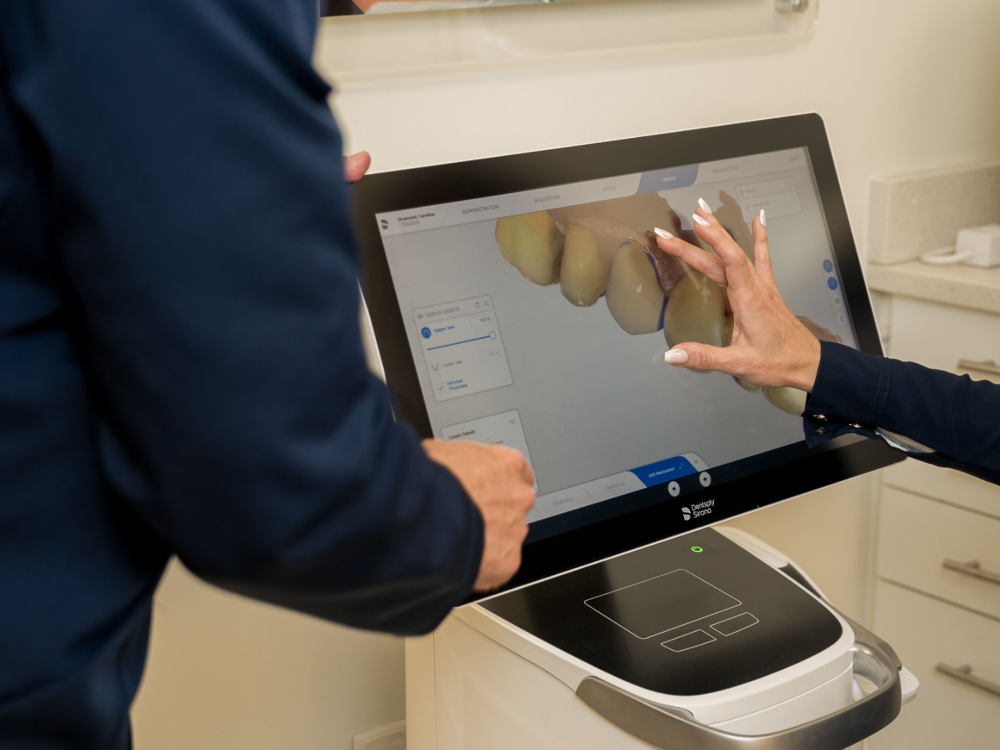

O CORAÇÃO DA OYSTER DENTAL
A Oyster Dental Clinic nasceu do sonho de levar o melhor da odontologia brasileira aos brasileiros que vivem nos Estados Unidos. Sob a liderança da Dra. Ana Paula Ott, com mais de 20 anos de experiência, nossa equipe oferece um cuidado humano, preciso e acolhedor.
Acreditamos que o processo é tão importante quanto o resultado. Cada paciente é acompanhado de perto, com atenção desde a primeira conversa até o sorriso final.
Localizada em Metrowest – Orlando, com equipamentos de última geração e atendimento em português, inglês e espanhol.
Segurança, qualidade e transparência são nossos pilares. Nosso propósito é fazer você sorrir com confiança, beleza e tranquilidade.
Leia Mais